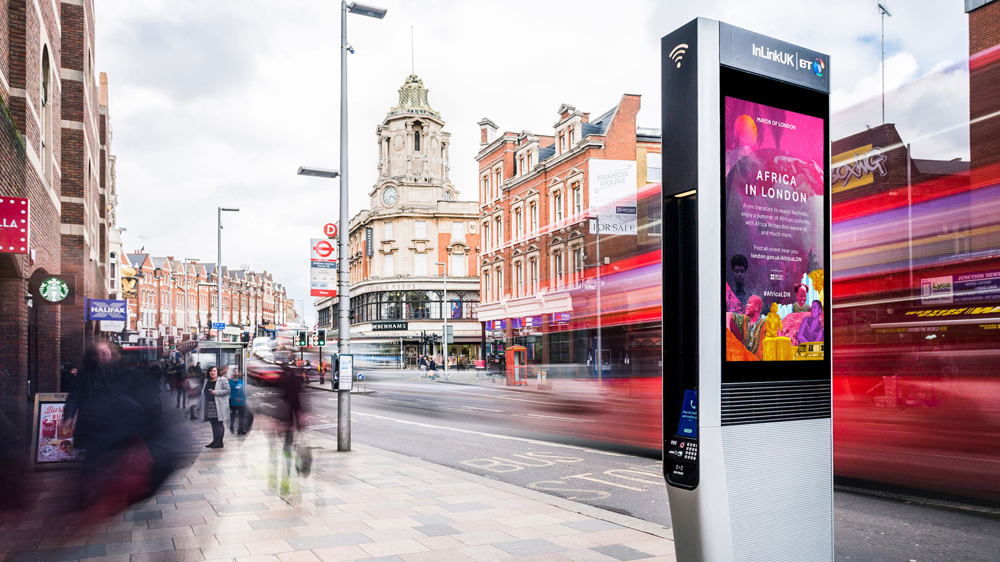

Africa In London —
Africa in London is a Mayor of London led event programme that celebrates African culture and its importance to London’s identity. The programme was created in partnership with the British Council and various African arts, cultural and heritage organisations.
For the first edition of an ambitious programme, the promotional material needed to be bold and striking, whilst relevant to the core demographic and engaging to a younger, creative audience. My concept took inspiration from the Afrofuturist cultural movement, using collages of bright coloured images associated with the cultural events on show.
